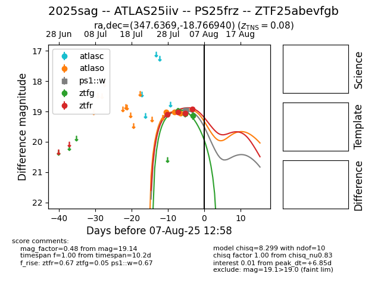

Target 2025sag at 2025-08-12 04:29, see:
FINK: fink-portal.org/2025sag
Lasair: lasair-ztf.lsst.ac.uk/objects/2025sag
ALeRCE: alerce.online/object/2025sag
TNS: wis-tns.org/object/2025sag
YSE: ziggy.ucolick.org/yse/transient_detail/2025sag
alt names
2025sag (yse,tns)
ATLAS25iiv (atlas)
ZTF25abevfgb (ztf,fink)
PS25frz (panstarrs)
coordinates:
equatorial (ra, dec) = (347.6369,-18.76694)
galactic (l, b) = (47.4193,-65.37160)
photometry
last atlaso=19.05, ps1::w=18.97, ztfg=19.14, ztfr=18.92
3 atlaso, 4 ps1::w, 3 ztfg, 4 ztfr detections
